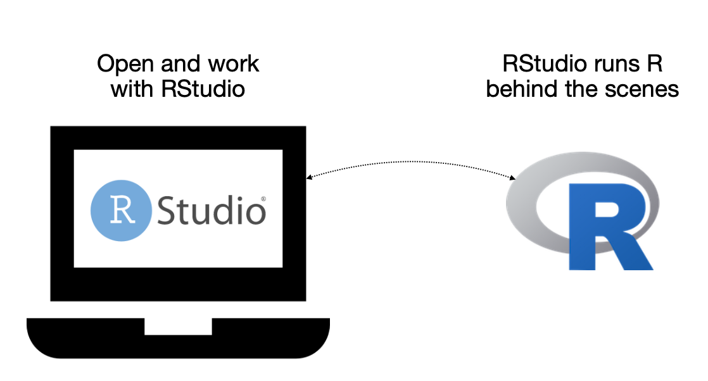
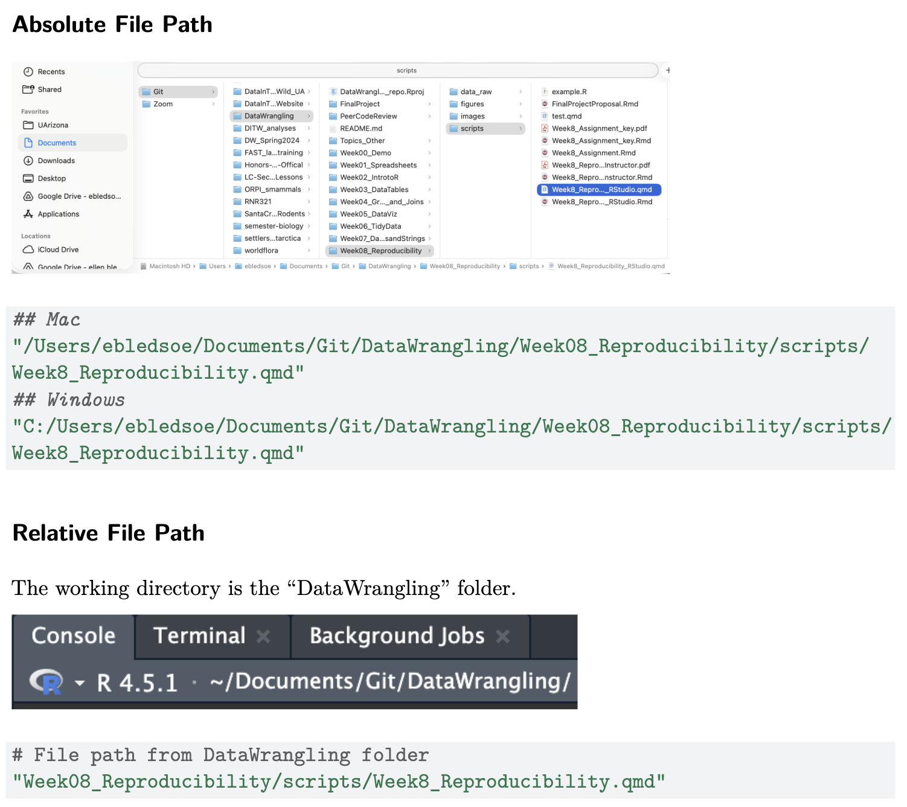
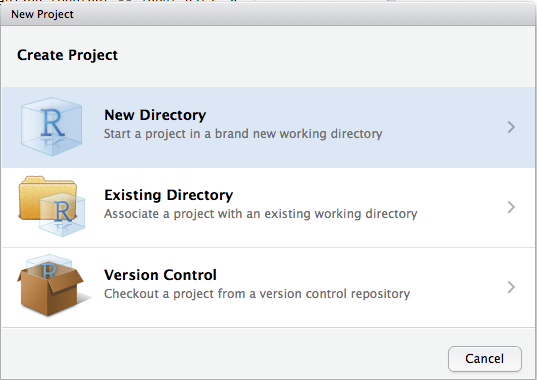
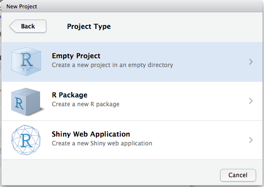
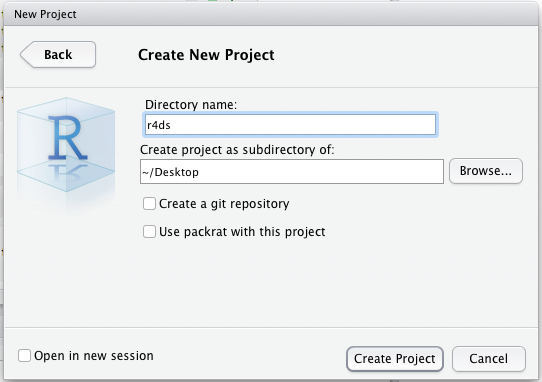
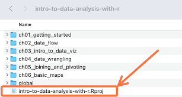
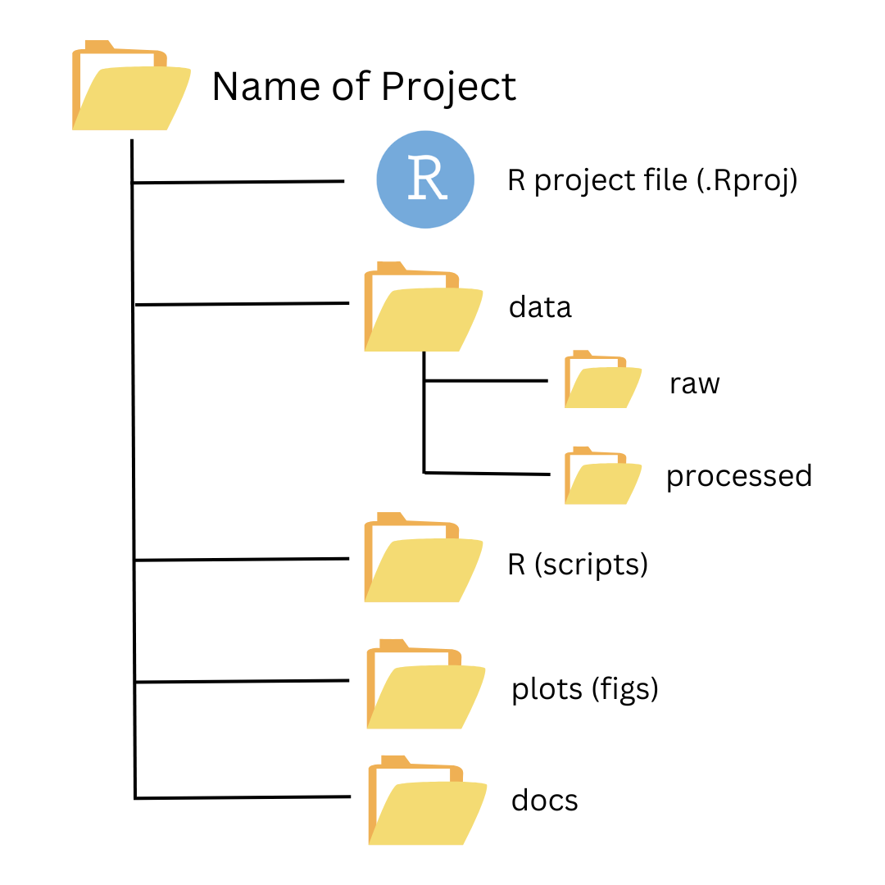

In this week’s lesson, we will be talking broadly about how to make our data analyses reproducible and how to start tackling larger projects.
For today’s lesson, we will focus on how we can increase reproducibility within RStudio.
R vs. RStudio
Before we begin, it is worth reminding ourselves of the difference between R and RStudio.

We are making the shift from working in Posit Cloud to using R and RStudio on your own device, meaning you should have both R and RStudio downloaded on your computer.
For most of us, even though we have downloaded the R software, we will likely never interact with the R program directly; I personally never open up R on my own computer.
Instead, in order to code in R and work with the R software, we will want to open up RStudio. Like it does in Posit Cloud, RStudio on our own computers connects to the R software that we have downloaded and lets us interact with R within the RStudio environment. So while I never personally open up R software directly, I frequently open up RStudio and work with R there!
Introduction to Reproducibility
Throughout the course, we have talked about many of our topics in the context of “reproducibility,” but what exactly does that mean?
When something is reproducible, it means we have the ability to recreate the same results (including cleaned data, tables, figures, and quantitative findings), using the same input data, computational methods, and conditions of analysis.
Our ultimate goal is to be able to rerun a fully analysis with a single click (or command).
Our first step is to make sure our code runs anytime and anywhere. That includes the next day or 5 years from now, on a desktop or a laptop, a Windows or a Mac, or on a collaborator or advisor’s computer.
Below are some guidelines for making this happen:
1. Make sure things you did before don’t matter (if they shouldn’t)
Computers store the results of each command that we run in sequence. Occasionally, we will make a change to the code (perhaps we are testing a complicated piece of code) and the code will look like it still runs.
Sometimes, that line of code only works because of something we did earlier in the session, but if we restarted the session, it would get stuck because an object doesn’t get created in the code or is created later on in the code.
We have actually been dealing with this scenario already. When we “render” a Quarto file (or “knit” a .Rmd file)–into a PDF, in our case–the document runs from scratch. If there is something in the code that is out of order or an object that isn’t created in the code, the Quarto file won’t create the PDF.
2. Clearing environments and restarting R
We can check that our code runs without having to knit, though. We have a few options.
Clear R environment using the broom icon on the Environment tab.
Doesn’t unload packages
Useful when developing code
Restart R to get a clean environment
Does unload packages
Useful for making sure everything works
Run entire file by selecting “Run All” in Quarto (Ctrl + Alt + R or Cmd + Opt + R)
For all of these options, we are trying to make sure that the code runs fully and produces the desired result without needed any tweaks.
3. Stop saving the current state of the environment
The typical default in RStudio is to automatically save the state of the environment when you close out of RStudio. Alternatively, it might ask if you want to save or not.
If you choose to save the workspace, everything in the environment will get reloaded when you start R, even when you restart it as described above.
While that might sound convenient, it can actually cause a lot of problems (see #1 above). To reduce the risk of having code that doesn’t fully run on one click, we want to stop R from storing the state of the environment when we close RStudio.
To set the default in RStudio to not save the workspace, we want to do the following: | Tools -> Global Options -> General -> Save workspace to ~/.RData on exit -> Never
Uncheck Restore .RData into workspace at startup.
4. Make sure code works on other computers
We will talk a lot more in-depth about this in a few minutes, but generally speaking, we want to do the following things to increase the likelihood that our code will run on another computer:
Avoid using setwd() and absolute file paths (e.g., C:\Users\Batman\DataCarp\data\mydata.csv)
Instead, use RStudio Projects and relative paths (e.g, data/mydata.csv)
Write code that will work on all operating systems
Filenames in code should match actual names exactly, including capitalization
Use / instead of \ or \\ in paths
5. Clean up extra code
Remove install.packages() lines from your code to avoid re-installing packages repeatedly
Remove experimental lines of code from your document
If you don’t want to remove them, comment them out by putting a # in front of the line of code.
A shortcut for this is Ctrl + Shift + C or Cmd + Shift + C
For example, now that we are using our own computers, we need to ensure that we have the correct packages installed on our local computers before we will be able to load them.
# download the package to your computer# only needs to be done once# install.packages("tidyverse")# load the package for use# needs to be done every time you open RStudiolibrary(tidyverse)
── Attaching core tidyverse packages ──────────────────────── tidyverse 2.0.0 ──
✔ dplyr 1.2.1 ✔ readr 2.2.0
✔ forcats 1.0.1 ✔ stringr 1.6.0
✔ ggplot2 4.0.2 ✔ tibble 3.3.1
✔ lubridate 1.9.5 ✔ tidyr 1.3.2
✔ purrr 1.2.2
── Conflicts ────────────────────────────────────────── tidyverse_conflicts() ──
✖ dplyr::filter() masks stats::filter()
✖ dplyr::lag() masks stats::lag()
ℹ Use the conflicted package (<http://conflicted.r-lib.org/>) to force all conflicts to become errors
File Paths
In the course so far, we’ve been using Posit Cloud and placing data files where R knows to find them for you without any fuss. Working with data files on your own computer is a little more complicated, but in this lesson we’ll learn how to do this effectively.
In order to use data (or other files) stored on a computer, we need to be able to tell R where to find the data.
This is done using file paths. They are a description of the directories where our files are stored.
If you click here, this should download the “Shrub Dimensions” dataset that we have used before; it is called shrub-dimensions-labeled.csv. But where does it get placed in our computer once it is downloaded?
If we try to load this dataset just using its filename, as we have been doing in Posit Cloud, it probably won’t work.
# should not runshrubs <-read_csv("shrub-dimensions-labeled.csv")
This doesn’t work because R cannot find the file located in the folder where we’ve tried to load it from.
Absolute vs. Relative Paths
File paths can be either absolute or relative. Spoiler alert: we prefer relative paths!
Absolute Paths
Absolute file paths describe exactly where something is on the computer.
The data file that we downloaded is now being stored in the Downloads sub-directory of our Home directory on our computer. The Home directory will vary a little bit by operating system.
For example, on a Mac or Linux computer, the Home directory is /home/username. Within the username directory is the Downloads directory (or folder).
# Example of an absolute file path on OSX/Linuxdata <-read_csv('/home/ebledsoe/Downloads/shrub-dimensions-labeled.csv')
On a Windows machine, change home to Users.
# Example of an absolute file path on Windowsdata <-read_csv('/Users/ebledsoe/Downloads/shrub-dimensions-labeled.csv')
Folders (another name for directories) are separated by /, a forward slash. We then have the file name at the end.
As an important note, Windows shows \ or \\ (backslashes) as the separator between folders. However, this does not work universally. Because / works on all operating systems, we want to use it to promote reproducibility across operating systems.
As we’ve done in the past, we always need to include the file extension (the part after the .) when reading in a file.
Relative Paths
Relative paths don’t specify exactly where on a computer the file is located. Instead, they point to the location of the file of interest in relation to what we call the “working directory”, meaning the directory (folder) that our software program is treating as home base.
For example, in Posit Cloud, the default “working directory” was the “project” folder.
Find Out Where You Are with getwd()
So how do we find out which directory R thinks that we are in? We can use a function called getwd().
This function stands for “get working directory.” Again, the “working directory” is the location from where the program is going to start files paths; any relative paths will need to start from this directory (folder).
Now we can build a path to our shrub data relative to our working directory.
# example relative path; will not run"Downloads/shrub-dimensions-labeled.csv"
The relative file path above is saying “From where I am currently, the shrub-dimensions file is in the Downloads sub-directory.”
Absolute vs. Relative File Path Example
Here is an example of the difference between the two file path structures from my office computer.

Loading Data
Let’s assume that our Quarto file is located in our current working directory.
If we have data that is also in our working directory and not inside of any other folders, we can use the file name alone to read in the data.
# if our Quarto file (or R script) and our data are in the same working directory,# loading data by specifying only the file name will run successfullyshrub_data <-read_csv('shrub-dimensions-labeled.csv')
This is considered a relative path, because both our Quarto file and the data file in the working directory. To point R to the data file, the only remaining piece of the path that we need to specify is the name of the file itself.
When we have data that is not located in the working directory, we have two options:
tell R where it is
change the working directory to where it is
Should I use setwd()?
Spoiler alert: no, you should not.
Changing the working directory is a common approach, albeit not the best approach. To do so, people use the setwd() function, which sets the working directory to a specific location.
This, however, can cause a number of issues.
If you are working with someone else’s files or on another computer, the directory that you want to be working from is likely different from the file path that has been put in the setwd() function. In general, using setwd() means that your code will only work on a single computer. This breaks a core tenet of reproducibility, so we want to avoid doing this.
Ideally, we want to have the working directory set automatically, regardless of what computer we are using, and we want to use paths relative to that working directory.
RStudio Projects
The simplest way to ensure that we are always using relative paths is to use RStudio Projects (or R Projects, same thing).
In fact, we’ve already been using them! Every time you click on an assignment in Posit Cloud, this was actually creating a new RStudio Project. Now we need to learn how to do this on our own computers.
Each project is a self-contained unit of work in a specific folder/directory. It treats all locations as relative to that specific directory.
Let’s set up an RStudio Project on our own computers.
> File -> New Project -> New Directory -> New Project -> [insert_name_here]
Select “New Directory”

Select “Empty Project”

Use the “Browse” button to find a location for your project folder and name it appropriately.

Once we create our new project, RStudio will create a .Rproj file in that directory. This file is not the project itself, but it does contain information about the project. We do not manually change this file.
To open an RStudio Project, you will want to open the .Rproj file.

We probably want to move this Quarto file into our project directory! We can also add our shrub dimensions data into the project directory as well. I will demonstrate how to do this manually.
As long as our Quarto file and shrub dimensions CSV are in the same folder as our .Rproj file, when we try to run the line of code that we are familiar with when reading in datasets, we should have success!
As we will discuss shortly, it is common to store data in a sub-directory, such as a data folder. Let’s create a new folder in our project.
Create the new folder: > New Folder -> data_raw -> OK
Move the data file into the new folder: > File checkbox -> More -> Move -> data_raw
Now, in order to successfully read in the shrub data file, we need to point R into the data_raw directory first before we specify the file name.
# first point to the data raw folder, then to the shrub data fileshrub_dim <-read_csv("data_raw/shrub-dimensions-labeled.csv")
Writing Data
We we have made some kind of change to our dataset and want to save that resulting dataset, we can use a function called write_csv() to do so.
Let’s pretend we’ve made some type of change to our shrub dataset and want to save it.
The arguments for write_csv() are:
the name of the object with the data you want to save (x)
the file path for where you want the new file to end up (file). This should include the name of the file you want to create, also with the file extension (.csv, in this case)
If you want to switch between projects, you can do so: > File -> Recent Projects or Open Project
Alternatively, you can click on the arrow next to the name of the project in the upper right-hand corner, which will provide the same options.
Project Structure
Next in our journey of reproducibility is project structure.
There are a lot of potential benefits to creating a good organizational structure from the beginning, including helpful documentation. This can help us understand all of the project components, work more efficiently, and make collaboration easier (including with our future selves!).
Setting up a good structure will save you a lot of frustration in long run, even if it might be a bit time-consuming and frustrating to do it right initially.
File Structure

If possible, we want to have all file associated with the project in one main folder. This main folder should be the RStudio Project folder.
From there, we can (and should…) have sub-folders. What exactly those sub-folders are is up to you. A good starting place is to have something like this (or like the image above):
data_raw
keeping the raw data in a separate folder helps ensure that the original copy always exists
metadata about the included files can go in this folder as well
data_clean
docs
outputs
big analysis files, data visualizations, etc.
scripts or files or code
any files in the scripts folder (.R, .Rmd, .qmd) should have relative file paths to read and write files
lots of descriptive text and/or comments
good object names (and column names)
general order is packages, data, any functions we have created, everything else
Both folder and file names should follow good naming conventions. They should be descriptive but not too long, have a consistent formatting, and include no spaces or special characters.
The R Project folder should also contain a README file with descriptions of the file structure, the files in the project, and any other relevant information for how to reproduce analyses or outputs.
File Paths in Quarto
Using documents that combine code output and text in single document, such as with Quarto files (which we are already doing!), is another great way to promote reproducibility.
There is an odd quirk that comes with using file paths in .qmd files, however.
For reasons I haven’t quite been able to nail down, file paths work a little bit different in R scripts (.R file that only understand the R language) and Quarto files (.qmd files, like we use, and also .Rmd files) in RStudio Projects.
For scripts, the R Project folder is the working directory, which is standard.
For Quarto (and RMarkdown) files, the folder in which the file is located is the file’s working directory.
What this means is that if your Quarto file is in a sub-directory, that sub-directory is the file’s reference point. To read in data from another sub-directory, we have to tell R that we want to go up one level in directory structure (to the project folder) and then into the other sub-directory.
To move “up” in your folder structure (or back to the larger folder), we use “..”
Often, projects end up requiring us to write A LOT of code to do A LOT of different tasks: data wrangling, analyzing, plotting, etc. Before we get to the final version, we often do a lot of experimentation to see what works and what doesn’t.
While you can put all of your code in one giant file, it is often considered best practice to separate your code into “manageable” amounts and at logical breaks. What constitutes a manageable amount or a logical break, however, is up to you!
Sometimes, you might have some pieces of code that are stored in a separate file that you want to use in another file. One example of this is if you’ve written your own functions for use.
The source() function will read and execute all of the code in a file and put the outputs in the environment.
# bring the objects in the source file into our environment# because both files are in the code folder and Quarto files interpret the folder# where they are located to be their working directory, we need only the file namesource("weight_function.R")
We can now see the function convert_lb_to_kg() appear in our environment.
If you are going to “source” a file in a document, it is best practice to do so near the beginning of the document where you load packages and read in any data you will need.
Goal of Good Project Structure
Ultimately, the goal of setting up a good project structure is reproducibility. We are aiming to get the same results from a set of data and code without having to make any adjustments, regardless of who is running the code or what computer it is on.
It also has important implications for how we share code with others.
For example, we can zip/compress the project folder and send it to someone else. When they work with the files in the project folder, as long as all of the paths are relative instead of absolute, they will work seamlessly.
When we start talking about version control using git and GitHub, they are nicely integrated into the RStudio Project structure.
Ultimately, reproducibility is meant to make our lives easier, for ourselves and our collaborators.
Helpful Resources
Below I’m including some resources that you might find helpful while you’re starting out understanding file paths and R Projects.
R for Epidemiologists: File Paths (and R Projects)